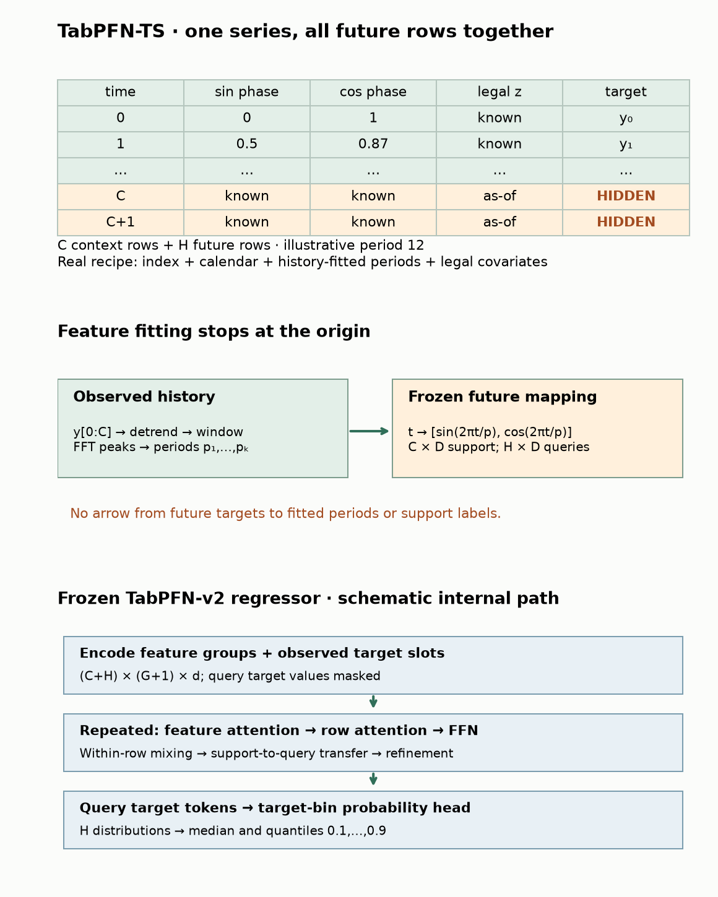
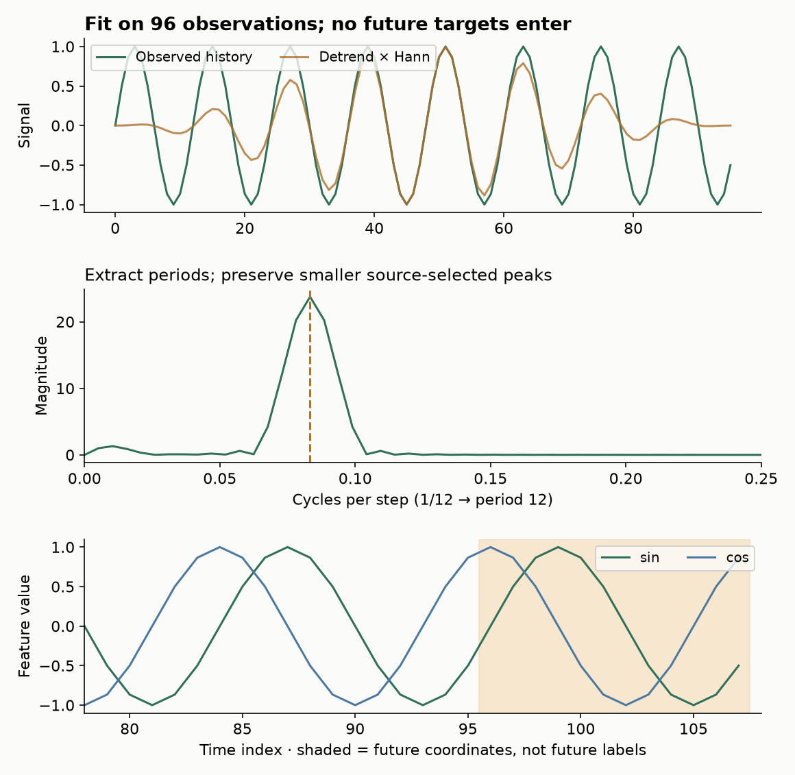
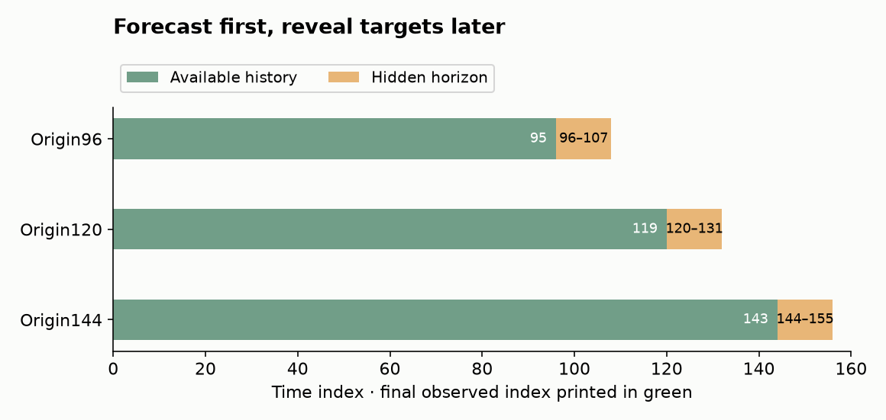
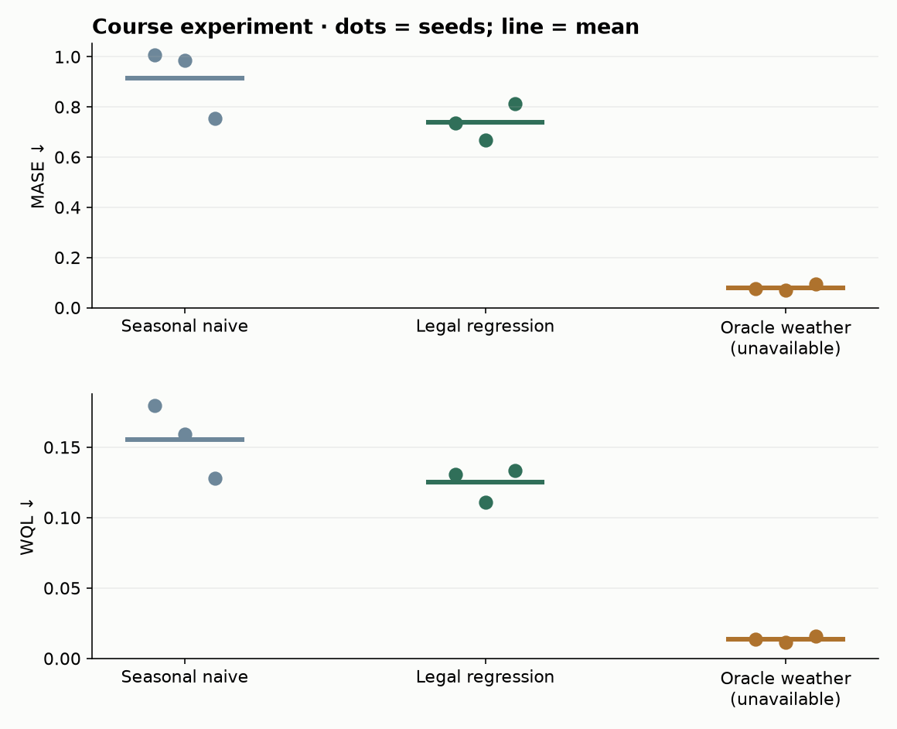

B19b · Forecasting: what is known when?¶
Research bridge · Elective ◆ · One win: turn a regressor into a forecast without giving it tomorrow's observations
B19a showed why a good mean is not necessarily a good predictive distribution. Now move the prediction into time. A beautiful distribution is useless if its inputs arrive after the decision. For the relational-learning mission, a customer’s future transactions or tomorrow’s observed weather must not enter today’s forecast through a join.
Student notebook · Executed solution · Download solution · Printable reference · Reproduction contract · L201 task worksheet
1 · First reconstruct the decision¶
A forecast origin is the boundary between observed history and the horizon we must predict. This lesson uses zero-based time: origin 96 means history0,…,95 and the first forecast at96. The issue time is95. A horizon of12 means predicting96,…,107 together. A covariate is any input other than the target: a calendar date, planned promotion or weather measurement. Its event time says when it describes the world; its availability time says when the decision maker could access it.
Worked prerequisite: at issue time 10, predict sales at 12. The weekday of12 was already known. An advertisement for12 announced at 8 is also legal. Observed temperature at 12 arrives at 12 and is unavailable. Even a measurement from8 that is delivered at 11 is unavailable at 10. Event time alone cannot enforce this boundary. A weather forecast issued by 10 could be legal, but it is a different input from the realized weather at 12. Historical data must preserve the appropriate vintage.
Before continuing, retrieve: can future calendar values be legal? Can an old record still arrive too late? Does low WQL establish that either input was legal?
Which cells exist for this decision?
Predict the legal inputs before changing the issue time or weather arrival.
The control changes arrival information, not the event being forecast. Legal access follows available_at ≤ issue_time. Target observations for the forecast horizon are always withheld from model construction. A database’s current rows are not necessarily its historical state; use an as-of snapshot or an arrival/revision log.
2 · Model architecture: TabPFN-TS is a wrapper around a regressor¶
Read From Tables to Time, §§3–4 and Appendix A.3. TabPFN-TS represents each time step as a row, constructs temporal features, and asks a pretrained TabPFN-v2 regressor to predict future rows. It does not require time-series-specific pretraining. This is a particular forecasting construction, not a capability automatically inherited by every tabular model.
Forecast future rows without feeding predictions back
Fit time features using history only. Encode both historical and future timestamps with that map. Context rows have targets; future rows have hidden targets. The predictor returns one marginal distribution per horizon.
![Fit time features using history only. Encode both historical and future timestamps with that map. Context rows have targets; future rows have hidden targets. The predictor returns one marginal distribution per horizon. Freeze the forecast origin: Only available history fits seasonality and preprocessing. Future timestamps are known; their targets are not. Build a regression table: Historical and future rows share the same feature map. This period-12 example shows only two phase columns. Embed cells and groups: Group features and append a target slot. Context target slots are observed; future target slots are masked. Read context in the predictor: Feature attention mixes slots within a row. Row attention brings historical evidence to query cells; feed-forward blocks update states. Decode a distribution: Read each query target state. Bin probabilities define a discretized predictive distribution over target values. Return the full horizon: Extract medians and quantiles for every future row. No predicted target is fed into the next input.](../assets/visual-details/b19b-mobile.svg)
Predict: Is the prediction for horizon 1 inserted as the target for horizon 2?
No. This TabPFN-TS construction queries future rows without autoregressive target feedback. Marginal forecasts do not specify a joint distribution over whole future paths.
Answer: No. This TabPFN-TS construction queries future rows without autoregressive target feedback. Marginal forecasts do not specify a joint distribution over whole future paths.

Previous overview and release settings


Let C be the number of retained context observations, H the forecast horizon and D the input-feature count. History is X_context[C,D] with observed y_context[C]; future inputs are X_query[H,D] with hidden labels. The full paper feature recipe has a running index,17 calendar columns,10 automatic-seasonality columns and any legal covariates: D=28 plus the covariate count. Missing seasonal slots are zero-filled. These are numerical features, not words tokenized by an LLM.
The running index marks progression. Calendar features encode known cycles with sine/cosine pairs. Automatic seasonal features estimate periods from history, then evaluate their sine/cosine coordinates at both historical and future positions. For period 12, the pair is (sin(2πt/12), cos(2πt/12)). At t=0 and12 it is(0,1); at t=3 it is(1,0). The pair distinguishes phases that sine alone merges. Knowing the future phase does not reveal its target.
Inside the pretrained regressor, grouped feature values and the target slot become vectors of width d. The schematic tensor is (C+H) × (G+1) × d, where G is the checkpoint’s feature-group count. Repeated feature-attention blocks exchange information within a row; row attention transfers information from observed support rows to query representations; feed-forward layers transform those representations. The query target representation feeds probabilities over target bins. This is the v2 mechanism recalled from B03; exact group size, depth and ensemble settings belong to the authenticated checkpoint/configuration, not to our diagram.
Forward-pass trace: history determines the temporal feature fit and the support labels; the same frozen feature map builds H future rows; the regressor returns H predictive distributions. Read a median for absolute error and quantiles for uncertainty scores. No earlier predicted target is fed back as the next input in this non-autoregressive construction. It produces marginal forecasts at each horizon position; do not assume a coherent joint distribution over whole future paths.
Visible implementation boundary: the notebook implements forecast contracts and the archived wrapper's seasonal extraction. It provides the full original wrapper source packet and an optional complete97-task operator. Its small ridge experiment below is explicitly a course mechanism. It does not implement or run pretrained TabPFN attention.
3 · Learning the period is also fitting¶
A seasonal pattern means that a component repeats with a period. Detrending removes a fitted linear component before searching for repeated oscillations. A Fourier transform expresses the resulting signal as frequencies; a spectral peak suggests a repeating component. A Hann window reduces abrupt edge effects before that transform. Zero-padding samples the spectrum more finely; it does not add new observations or establish a true period.


The visible source mirror follows the archived default pipeline: fit a line on history, subtract it, multiply by a Hann window, append zeros to double its length, compute Fourier magnitudes, remove the zero-frequency component, retain peaks above 5% of the maximum, take up to 5, round inverse frequencies to periods, deduplicate and sort by magnitude. Then construct future sine/cosine columns from those periods. Archived implementation
Audit result: four source-parity cases pass, including period 12 and mixed periods 12/8. A constant input can still yield peaks from tiny numerical residuals. Agreement with released code is not proof that every detected seasonality is meaningful. The paper pseudocode describes a convolution/symmetric padding, whereas this source uses multiplication/right padding. We expose the difference rather than quietly change the implementation.
CHECK: why is concatenating future timestamps acceptable, but using future targets to choose spectral peaks invalid? The archived transformer explicitly requires missing query targets. If a future-label intervention changes learned periods, the boundary is broken. Dropping missing observations also changes the index geometry; preserve and audit its interaction with calendar timestamps.
4 · Evaluate the forecast you could have issued¶
In rolling-origin evaluation, the issue time advances. Refit any data-dependent preprocessing on that origin’s history; predict the entire declared horizon without seeing its targets; then score. At the next origin, targets that have now arrived may become history. This is an expanding context here, not a random row split.


Our fixed origins96,120,144 each predict12 steps. Their forecast windows do not overlap, but their training histories do. They are not independent datasets. In a larger study, keep validation origins for model/feature selection separate from the final evaluation origins. If labels arrive late, the historical prefix itself also needs an availability filter; the course generator assumes immediate target arrival.
A seasonal-naive point forecast copies the last observed value at the same seasonal phase. With period 12, the point forecast at96 copies84. This is a useful first baseline. A stronger baseline should have the same legal covariates and selection budget as the challenger: for example, a tuned feature-based tree or an appropriate statistical model. The course’s fixed ridge predictor is illustrative, not an exhaustive baseline comparison.
MASE divides mean absolute median-forecast error by the mean historical error of a seasonal-naive predictor. For history y₀,…,yC−1 and seasonal lag s:
scale = mean(|y_t − y_(t−s)|, t=s,…,C−1)
MASE = mean(|future_y − forecast_median|) / scale.
For history[1,3,2,4] and s=1, scale=(2+1+2)/3=5/3. Future observations[2,4] and medians[1,5] have mean absolute error1, so MASE=0.6. MASE<1 means lower error than the historical scaling error; it does not guarantee beating seasonal naive on the held-out horizon. A constant history gives scale0; our teaching scorer refuses the undefined ratio. A benchmark must declare its own zero policy.
Weighted quantile loss (WQL) evaluates forecast quantiles. A q-quantile puts q of the probability at or below it. With error e=y−prediction, pinball loss is max(qe,(q−1)e). WQL doubles the sum of pinball losses, divides by the sum of absolute target values, then averages over q=0.1,…,0.9. Underprediction costs more at a high quantile. At q=.5, doubled pinball loss is absolute error. For the two median predictions above, WQL=2/6=1/3.
WQL is a quantile-grid approximation related to B19a’s CRPS; it is not full-CDF evaluation or proof of calibration. Its denominator weights large-magnitude series when pooled. Our lab averages origin scores within seeds; a benchmark evaluator may pool differently. Zero total absolute target magnitude is explicitly rejected here. GIFT evaluation code
5 · A better score from forbidden information¶
**Frozen course experiment:**3 seeds × 3 origins × 3 arms;156 generated steps per seed;12-step horizons. Demand is20 plus a period 12 sine, a scheduled promotion,4×weather and noise. Promotion is announced24steps ahead; weather is independent and observed only at its event time. The three arms use seasonal naive, fixed ridge with legal seasonal/promotion features, and the same ridge with future observed weather. All origins, coefficients, seeds and regularization were fixed without outcome-based selection.
The ridge arms minimize squared training error plus a fixed coefficient penalty. We add empirical training-residual quantiles to their point predictions. The seasonal arm adds median-centered historical seasonal-difference quantiles to its seasonal point forecast. These are simple distribution heuristics; neither has a formal coverage guarantee. This manufactured problem isolates information access and provides no general TabPFN performance evidence.
| Arm | Mean MASE ↓ | Mean WQL ↓ | WQL by seed0 /1 /2 |
|---|---|---|---|
| seasonal_naive | 0.9159 | 0.1556 | 0.1794 / 0.1594 / 0.1281 |
| legal_regression | 0.7385 | 0.1251 | 0.1309 / 0.1111 / 0.1333 |
| oracle_weather | 0.0797 | 0.0136 | 0.0137 / 0.0114 / 0.0157 |


The illegal oracle’s improvement answers a different question: how well could we predict if we already knew future weather? It cannot justify deployment. Legal regression also does not beat seasonal naive on every seed; keep that negative result. Across 9 paired origin/seed interventions, changing unavailable weather leaves legal inputs and forecasts fixed, while the oracle changes. All 324 prediction keys and 27 metric calculations are independently checked.
Falsification test: replace all unavailable future covariates and labels, preserving the historical inputs. Legal feature fits and forecasts must remain fixed. This test can expose an information path; passing it does not prove that every possible leak has been removed.
6 · Full reproduction attempt: the score file is part of the experiment¶
The approved target is the complete v4 Figure 4.1, not one convenient dataset. We recovered all 97 task records for each of its 13 plotted models: 1,261 released records. The model roster comes from the actual figure, which includes Sundial/PatchTST and omits AutoETS despite the surrounding prose. The notebook recomputes equal-task geometric score ratios and tied WQL ranks from the complete matrix.
| Model | WQL rank: released / paper | Relative WQL: released / paper | Relative MASE: released / paper |
|---|---|---|---|
| TiRex | 2.526 / 2.515 | 0.488 / 0.413 | 0.716 / 0.642 |
| Toto-1.0 | 4.247 / 4.237 | 0.517 / 0.437 | 0.750 / 0.673 |
| Moirai-2 | 4.485 / 4.464 | 0.516 / 0.436 | 0.728 / 0.654 |
| TabPFN-TS | 5.402 / 5.392 | 0.544 / 0.460 | 0.771 / 0.692 |
| TimesFM-2.0 | 5.474 / 5.454 | 0.550 / 0.465 | 0.758 / 0.680 |
| Chronos-Bolt-Base | 5.887 / 5.866 | 0.574 / 0.485 | 0.808 / 0.725 |
| Sundial-Base | 6.412 / 6.402 | 0.559 / 0.472 | 0.750 / 0.673 |
| PatchTST | 6.985 / 6.943 | 0.587 / 0.496 | 0.849 / 0.762 |
| TFT | 7.253 / 7.222 | 0.605 / 0.511 | 0.915 / 0.822 |
| DeepAR | 9.706 / 9.624 | 0.853 / 0.721 | 1.343 / 1.206 |
| Auto-Arima | 10.474 / 10.284 | 0.912 / 0.770 | 1.074 / 0.964 |
| Auto-Theta | 10.985 / 10.923 | 1.244 / 1.051 | 1.090 / 0.978 |
| Seasonal-Naive | 11.165 / 11.675 | 1.000 / 1.000 | 1.000 / 1.000 |
Only 2 of 39 displayed values match to 3 decimals: SeasonalNaive’s two relative scores equal1 by construction. The released matrix is completely reconstructed, but the historical figure remains INCOMPLETE_SOURCE_PROTOCOL_GATE. The confidence intervals are not reconstructed: their original resampling procedure and unit have not been authenticated. We do not create substitute error bars and call them the paper’s.
The dated repository contains a January2025 TabPFN score file, whereas GIFT updated its file in May2025; we use the same pinned GIFT snapshot for all 13 models. GIFT also documents a July2025 baseline correction. Its pre-correction repository file contains only4tasks and cannot fill the97-task contract. The historical candidates’ dependencies, backend choices and checkpoint names differ. These are concrete source/version questions, not permission to select the file that produces the desired rank. Complete audit · Original figure · GIFT snapshot

Evidence ledger: course diagnostic and source-seasonality checks complete; released-score reconstruction complete; original figure identity/intervals incomplete; fresh benchmark inference, raw-prediction rescoring and pretraining NOT_RUN. Paid spendUSD 0. The portable notebook replays saved scores, not pretrained model predictions. The optional full evaluation operator is provided but its model execution is untested. Full contract and commands
7 · Lab and research decision¶
- Implement the arrival-time filter; changing an unavailable cell must leave its output unchanged. A future event may still have a legally known feature.
- Implement complete rolling horizons; do not silently shorten the final horizon or include a query label in context.
- Implement MASE and WQL with explicit denominators, dimensions, quantile ordering and zero handling. Reproduce the hand trace before the full experiment.
- Run the visible source seasonal extraction and the complete released-score replay. Explain why both can pass while Figure 4.1 remains incomplete.
- Complete the forecasting task contract. Include this route in L201 only if forecasting is relevant to your thesis and you can establish the historical information state. Otherwise write an exclusion decision and the evidence that would change it.
Forecasting is not imputation of arbitrary missing cells. A sales forecast conditional on promotion is also not the causal effect of assigning promotion: that requires identification assumptions beyond this wrapper. Survival outcomes introduce censoring and a different observation process. Those other B19b routes remain optional separate work.
Ask the teacher follow-up questions, especially about a failed availability test or a source discrepancy. In1,7 and30 days, reconstruct the sales-at 12 example without notes and explain why a better score may correspond to a different decision problem. Author execution does not establish learner mastery: PENDING_WRITTEN_DEFENSE. Carry your contract into B23/B24 and then L201.